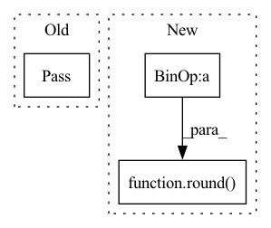

Pattern ID :186

Before Change
class TextMelDataset(object):
def __init__(self):
pass
def get_item(self):
pass
After Change
self.sample_rate = sample_rate
self.num_mel_bins = num_mel_bins
self.n_fft = int(round(sample_rate * 0.001 * frame_length_ms))
self.hop_length = int(round(sample_rate * 0.001 * frame_shift_ms))
def get_text(self, index):
return torch.IntTensor(text_to_sequence(self.transcripts[index], "english_cleaner"))
In pattern: SUPERPATTERN
Frequency: 4
Non-data size: 3
Instances
Fragment ID: 1643707
Project Name: sooftware/tacotron2-pytorch
Commit Name: ddedb2ab14c13e042db76019268b33e876b07055
Time: 2020-10-04
Author: sh951011@gmail.com
File Name: tacotron2/data/data_loader.py
M Class Name: TextMelDataset
N Class Name: TextMelDataset
M Method Name: __init__(8)
N Method Name: __init__(1)
M Parent Class: object
N Parent Class: object
M File Name: tacotron2/data/data_loader.py
N File Name: tacotron2/data/data_loader.py
M Start Line: 10
M End Line: 11
N Start Line: 14
N End Line: 29
'>
Before Change
def compute_mean_rank(kg_embedding_model, triples, corrupt_suject):
pass
def compute_hits_at_k():
pass
After Change
mean_rank = np.mean(ranks)
stop = timeit.default_timer()
log.info("Evaluation took %s seconds \n" % (str(round(stop - start))))
return mean_rank
'>
Fragment ID: 1643709
Project Name: pykeen/pykeen
Commit Name: 7b48f9c85932c6a2e7d62f25b40022cdbac2e366
Time: 2018-07-26
Author: ali-mehdi@live.de
File Name: src/utilities/evaluation_utils/compute_metrics.py
M Class Name: AnonimousClass
N Class Name: AnonimousClass
M Method Name: compute_mean_rank(3)
N Method Name: compute_mean_rank(3)
M Parent Class:
N Parent Class:
M File Name: src/utilities/evaluation_utils/compute_metrics.py
N File Name: src/utilities/evaluation_utils/compute_metrics.py
M Start Line: 2
M End Line: 3
N Start Line: 38
N End Line: 57
'>
Before Change
pass
def compute_hits_at_k():
pass
After Change
hits_at_k = None
stop = timeit.default_timer()
log.info("Evaluation took %s seconds \n" % (str(round(stop - start))))
return hits_at_k
'>
Fragment ID: 1643717
Project Name: pykeen/pykeen
Commit Name: 7b48f9c85932c6a2e7d62f25b40022cdbac2e366
Time: 2018-07-26
Author: ali-mehdi@live.de
File Name: src/utilities/evaluation_utils/compute_metrics.py
M Class Name: AnonimousClass
N Class Name: AnonimousClass
M Method Name: compute_hits_at_k(4)
N Method Name: compute_hits_at_k(0)
M Parent Class:
N Parent Class:
M File Name: src/utilities/evaluation_utils/compute_metrics.py
N File Name: src/utilities/evaluation_utils/compute_metrics.py
M Start Line: 6
M End Line: 6
N Start Line: 60
N End Line: 79